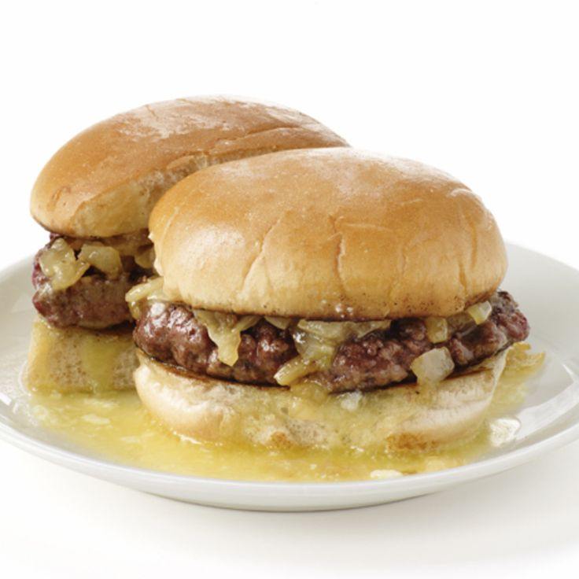

The Butter Burger

Description
The butter burger is one of the most difficult burgers to make at
home, simply because you’ll have a hard time trying to convince your
brain to put that much butter on a burger.
It’s kind of like trying to cut
your own hair, or self-surgery—always better when someone else does
it. Find a friend and make some butter burgers!
Ingredients
- neutral oil
- 1kg fresh-ground meat
- salt
- 225g salted butter, softened to room temperature
- soft white buns, toasted
Steps
- Preheat the cast-iron skillet over medium heat and add a drop or two
of peanut oil. Use the spatula to spread the oil, coating the surface.
- Put the ground beef in the mixing bowl and use the salad scoop to
make balls of beef, placing them on the heated skillet as you go.
- Sprinkle a generous pinch of salt on each ball of beef, then using the
stiff spatula press them down hard. Once they are flat, don’t touch them
again. Let them cook for 2½ minutes or until reddish liquid begins to
form on the surface of the patties.
- Flip them once and let cook another 2 minutes without touching.
- Remove the pan from the heat and place the patties on the toasted
buns.
- Using a wide spreading knife or a spoon, spread what seems like far
too much (nearly 2 tablespoons) of the soft butter directly onto the
inside of the bun top—not directly on the burger. If you apply the butter
to the hot patty directly, it will immediately slide off and onto your foot.
- Carefully marry the buttered bun to the burger, consume immediately,
and stop thinking. Just enjoy it.